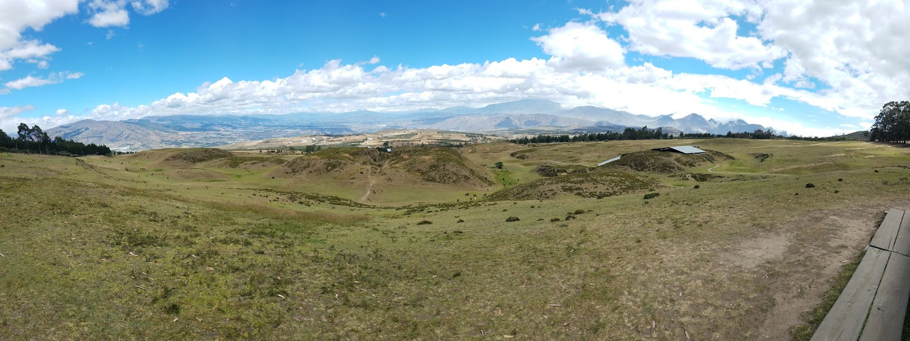
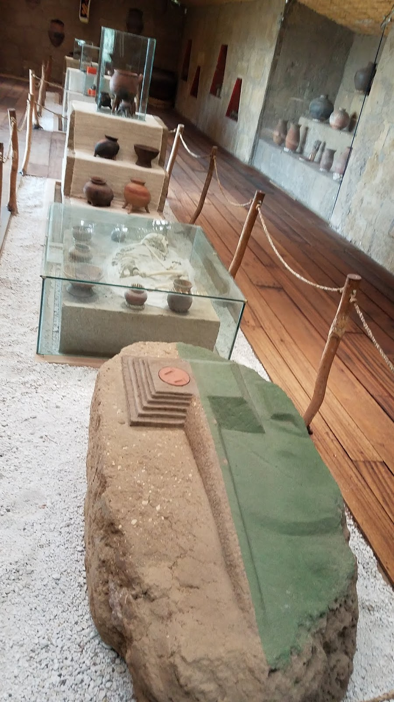
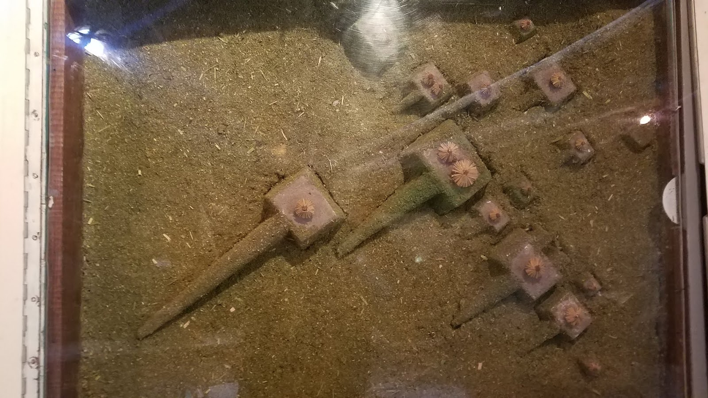
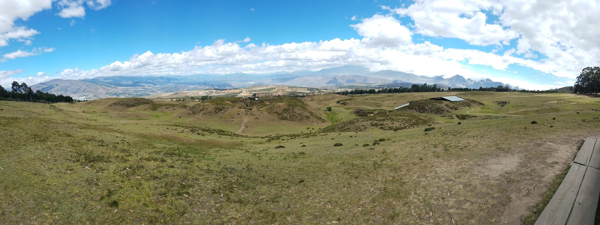
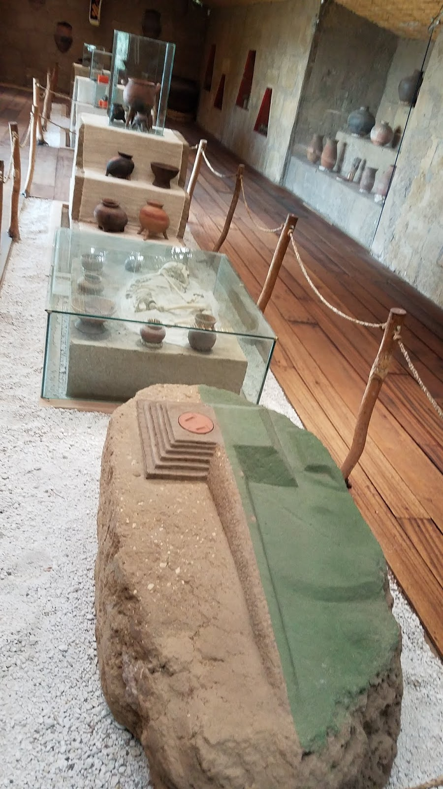
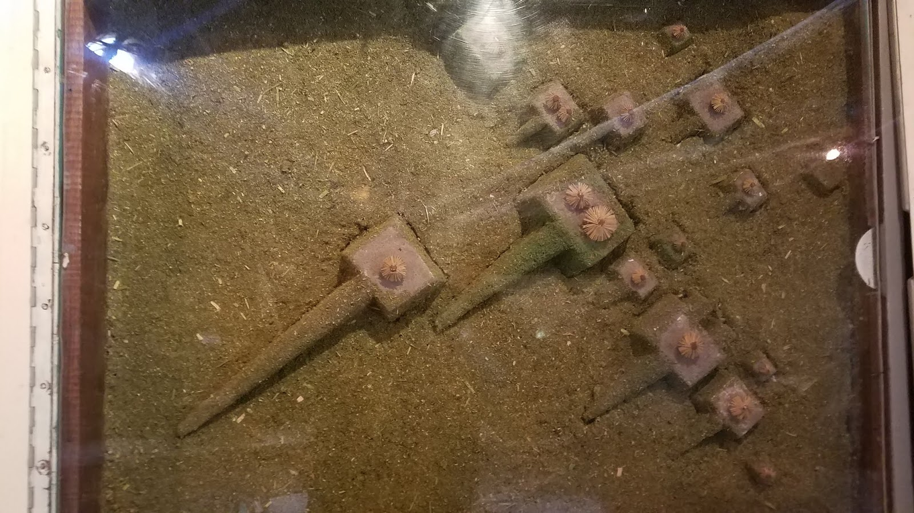

Pirámides truncas de Cochasquí, una muestra del legado prehispánico.
Historia del Parque
El Parque Arqueológico Cochasquí es un sitio preincaico ubicado en la provincia de Pichincha, Ecuador, a aproximadamente 3.100 metros sobre el nivel del mar. Se estima que fue habitado entre los años 500 y 1500 d.C. por la cultura Quitu-Cara, una de las civilizaciones más importantes de la región andina antes de la llegada de los incas.
El complejo está compuesto por 15 pirámides truncas y 21 tolas funerarias. Estas estructuras fueron construidas con bloques de cangahua, una roca volcánica compacta que permitió su preservación a lo largo de los siglos. Se cree que las pirámides tenían múltiples funciones, como centro ceremonial, astronómico y administrativo. Además, estudios arqueológicos han demostrado que algunas de estas estructuras estaban alineadas con eventos astronómicos, como los solsticios y equinoccios, lo que sugiere un avanzado conocimiento astronómico por parte de sus habitantes.
Durante la época incaica, Cochasquí pudo haber servido como un punto estratégico y de resistencia contra la expansión del Imperio Inca en la región. A diferencia de otros asentamientos que fueron dominados por los incas, Cochasquí muestra pocas evidencias de ocupación inca, lo que indica que pudo haber mantenido cierta autonomía hasta la llegada de los españoles en el siglo XVI.
Las primeras investigaciones científicas en el sitio comenzaron en el siglo XX, con estudios realizados por el arqueólogo ecuatoriano Max Uhle y más tarde por Emilio Estrada y Galo Ramón Valarezo. Gracias a estas investigaciones, se han encontrado restos de cerámica, herramientas y evidencias de prácticas agrícolas avanzadas, lo que confirma que la cultura Quitu-Cara tenía un alto nivel de organización social y económica.
Hoy en día, Cochasquí es considerado uno de los sitios arqueológicos más importantes de Ecuador, y su estudio sigue proporcionando información clave sobre las civilizaciones prehispánicas de los Andes.
Galería de Imágenes
 




